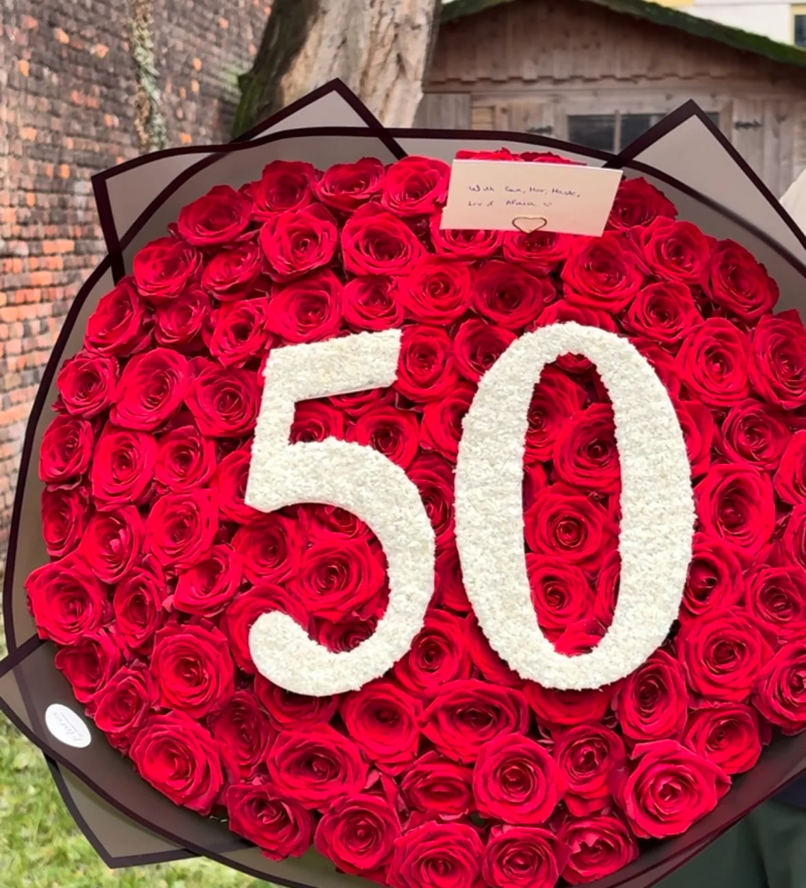
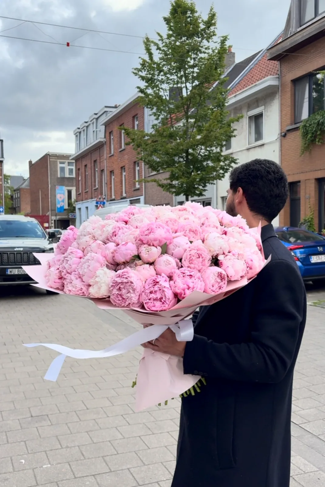
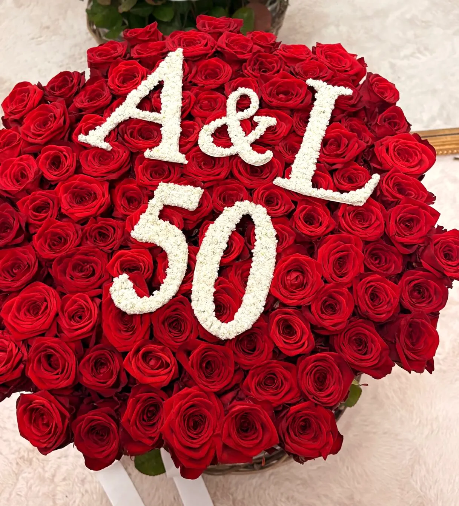
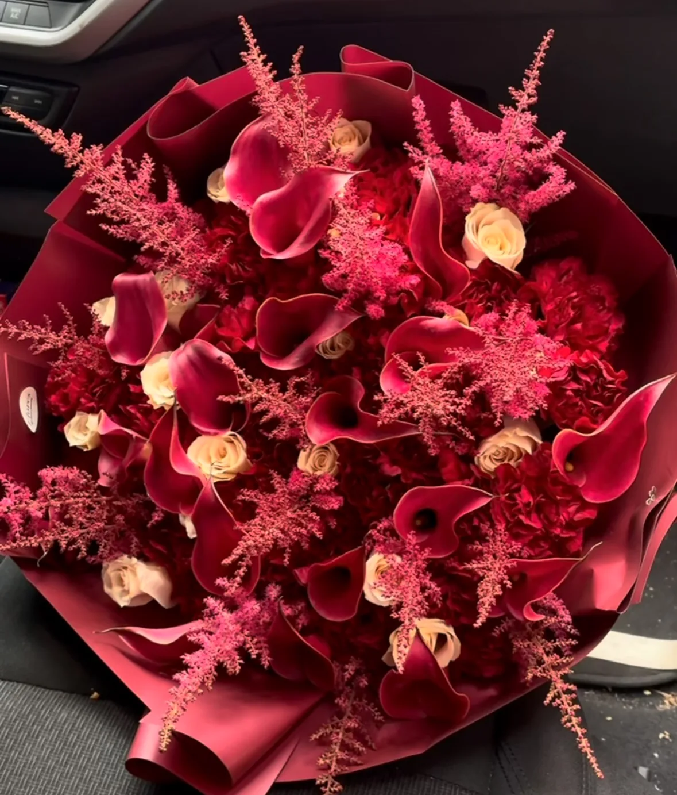
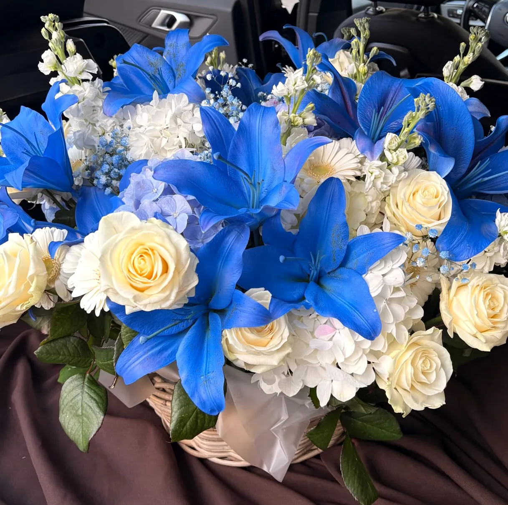
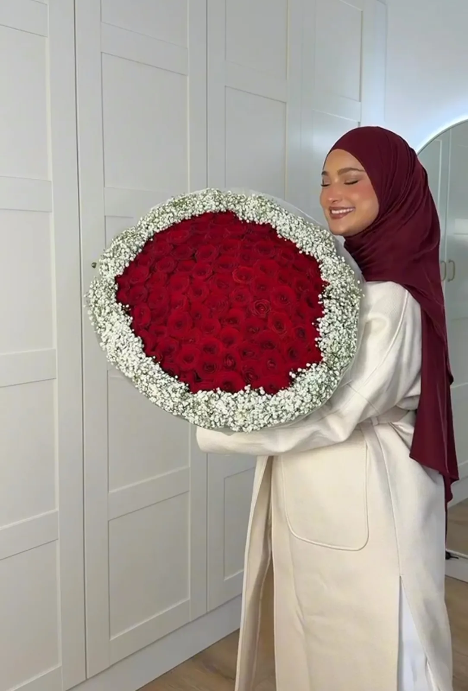
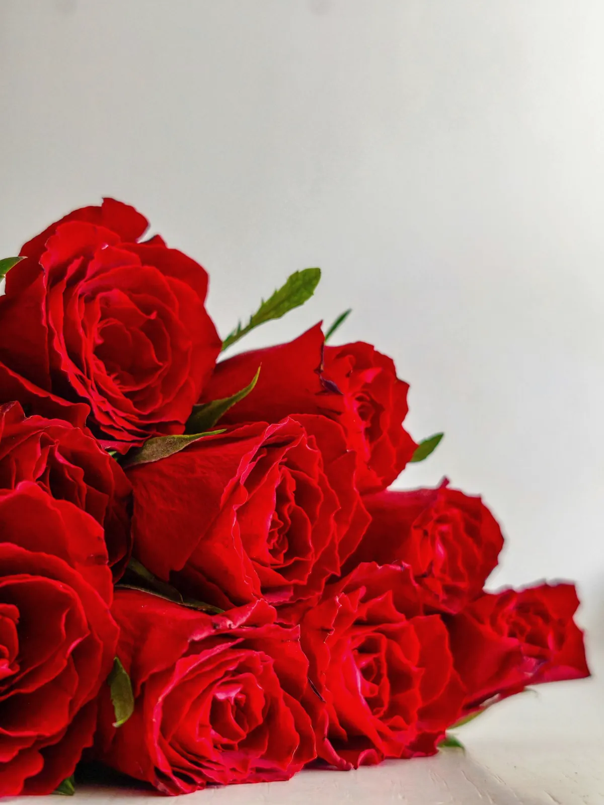

01Verjaardag
Cijfers in rozen
Een 18, een 30 of een 50, in wit gipskruid midden tussen de rode rozen.
Boeketten van honderd stelen, cijfers en letters in rozen, pioenen die je amper kan dragen. Alles met de hand gemaakt in Antwerpen, en ook last minute nog geleverd.

Elk boeket maken we voor één persoon en één moment. Stuur ons wat je in gedachten hebt, de rest komt van ons.

Een 18, een 30 of een 50, in wit gipskruid midden tussen de rode rozen.

Jullie letters bovenop een mand vol rozen. Voor een jubileum dat je niet zomaar laat passeren.

Calla's, rozen en zachte pluimen in één tint. Jij kiest de kleur, wij de rest.

Blauwe lelies en witte rozen in een mand die meteen kan blijven staan.

Rond gebonden, met een dikke rand gipskruid en als je wil een lint met je eigen tekst erop. Het boeket voor een aanzoek, een trouw of gewoon omdat zij het verdient. Wil je liever pioenen of een andere kleur? Dat kan net zo goed.
Je stuurt ons een WhatsApp met je idee. Wij denken mee en zorgen dat het boeket er op tijd is, waar het ook naartoe moet.
Voor wie, welke gelegenheid, welke kleur. Een foto als voorbeeld helpt altijd.
We binden je boeket met de hand, met het lint of de letters die je vroeg.
Je haalt het op, of wij brengen het tot aan de deur. Ook als het vandaag nog moet.
Elke dag open
van 10u tot 22u.
"My favourite place to place an order. Also they are super helpful with last minute orders. And every flower is 10/10. The customer service here is also what makes it a great experience to purchase from. Definitely worth it!"
"Absolutely beautiful roses! 🌹 The bouquet is stunning, with vibrant red roses that look even more beautiful in person. The flowers were carefully arranged, and you can truly see the love and attention to detail in the presentation."
"10/10 best place to get flowers from. I got my self 101 flowers they look so good and price is also good for the quality!"
Stuur ons een berichtje met de datum en waar het naartoe moet. We laten snel iets weten, ook voor een bestelling op het laatste moment.

Ik maakte deze demo voor jullie om te tonen wat er kan. Na een kort gesprek maak ik er iets veel persoonlijkers van, helemaal naar jullie wens.
Vrijblijvend. Ik kom langs of we bellen.
Op maat, op jullie eigen domein.
Geen voorschot. Jullie betalen pas als alles klaar is.
Hosting, domeinnaam en kleine wijzigingen, zoals nieuwe openingsuren.
Omdat een voorbeeld meer zegt dan een mail. Zo zien jullie meteen wat er kan, en het kost jullie niets.
Nee. Het gesprek is vrijblijvend. Vinden jullie het niks, dan is het daarmee gedaan.
Na ons gesprek staat jullie site binnen 10 tot 14 dagen online.
Zeker. Jullie domeinnaam kan gewoon blijven, de nieuwe site komt in de plaats van de oude.
Nee, dat doe ik op basis van ons gesprek. Eigen foto's zijn mooi meegenomen, maar niet nodig om te starten.